PetTrackr: Making daily pet diabetes tracking easier
A companion app for Universal Biosensors’ PETRACKR® glucose analyzer. It helps people caring for a diabetic cat or dog log readings, keep up with daily care, and share a clear history with their vet.
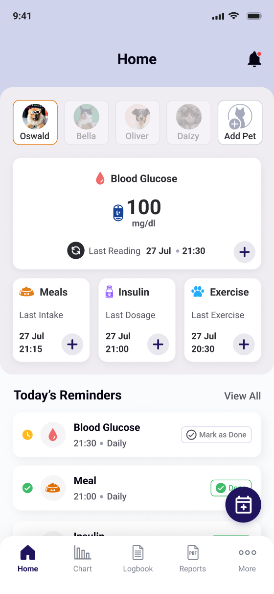
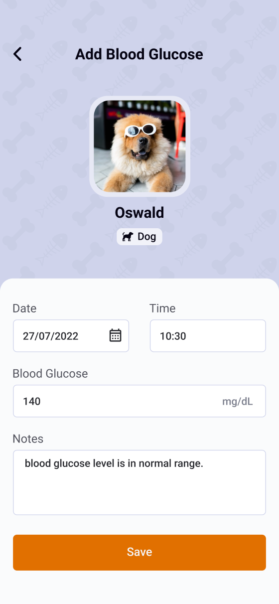
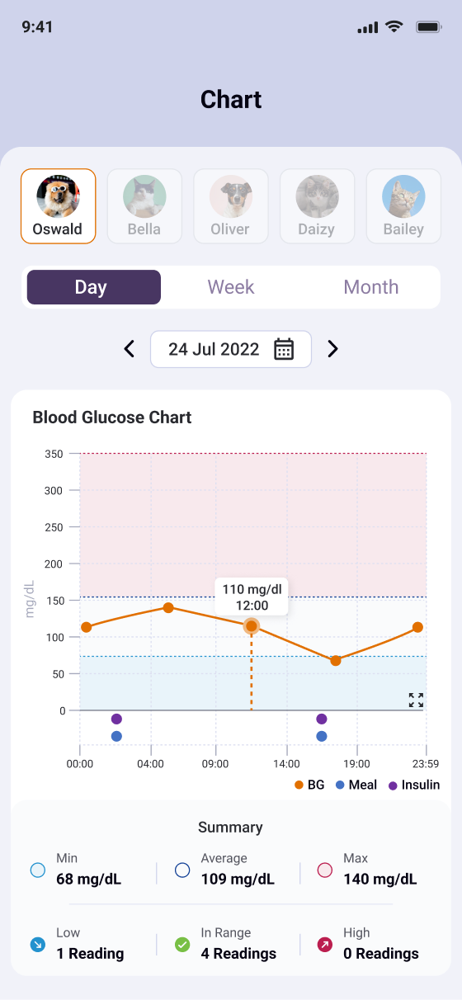
01 · My contribution
I was the only designer, from the first interviews to handoff
Because I was the only designer, most design calls were mine to make and defend. The work still depended on other people, so here’s who owned what.
Who owned what
I designed
Everything on the design side, from research through handoff and design QA.
I led
The conversations that decided what each release could realistically include.
The team owned
The parts I worked closely with, but didn’t own.
Understand
10 in-home interviews, a 14-day diary study, a look at 4 competing apps, and 3 vet interviews.
Map the journey
A journey map that surfaced nine friction points.
Design and test
Three usability rounds, with five people in each.
Rebuild
After Round 1, I rebuilt onboarding so owners reach their first reading sooner.
Ship
100+ screens for iOS and Android, plus handoff and design QA.
02 · The problem
Readings were scattered, and older ones could be lost
Managing a pet’s diabetes means testing blood glucose every morning and evening. The test itself was quick. The hard part was keeping the readings in one place, and getting them to the vet before the analyzer overwrote them.
Owners tested their pet at home every morning and evening, then wrote the reading on paper, in phone notes, or in a spreadsheet. Before a vet visit, they gathered it all up and photographed it.
Tracking added work to a routine that was already demanding, and pulling together a useful history for the vet took a long time.
The analyzer only keeps seven days of readings. If owners didn’t sync in time, older readings were overwritten and lost.
Make readings quick to record, make it obvious when data needs syncing, and help owners hand the vet an organized history.
How it worked before
The analyzer keeps only seven days of readings
Skip syncing for nine days, and the first two days are gone, including readings a vet uses to adjust insulin.
03 · Research
Starting where the testing happens: at home
Before designing anything, I wanted to see what really happens around a reading, not just the moment someone types in a number. So I started in owners’ homes, then talked to vets to learn how they use the records owners bring in.
4 of 5 could not complete Bluetooth pairing.
Usability, Round 1Setup asked for too much before people could do the one thing they came for.
Let people log a first reading right after sign-up, before any other setup.
Decision 1Owners hold the analyzer in one hand and a restless pet in the other.
Diary studyLogging had to compete with looking after the pet.
Keep entry short, with as little typing as possible.
Decision 2The analyzer retained seven days of readings before overwriting older data.
Hardware constraintOwners needed to see at a glance whether their data was up to date.
Show sync status clearly, with a way to fix it.
Decision 3Veterinarians reviewed trends against a pet’s target range.
Vet interviewsA number on its own doesn’t tell you much.
Show readings against the pet’s target range, with meals and insulin.
Decision 4All six diary participants set up phone alarms at the start. By the end of week one, all six were ignoring them.
Diary studyGeneric alarms are easy to tune out.
Make each reminder about a specific pet and task.
Decision 5None of the three vets used a shared app with owners. They all got records by email or messaging.
Vet interviewsSharing had to fit how clinics already work.
Start with a PDF report instead of the planned vet portal.
Decision 604 · Design direction
One idea to guide every decision
The research kept pointing the same way: the app had to fit into a routine that was already busy, not add to it. That meant getting people to their first reading fast, cutting repeated typing, making sync status obvious, and keeping records ready for the vet.
The guiding principle
Fit the app into the care routine owners already have.
What the routine looks like with PetTrackr
After
05 · Decision 1 of 6 · Onboarding
Getting people to their first reading faster
In the first round of testing, onboarding had seven steps. People had to set up almost everything before they could log a single reading, and 2 of 5 didn’t make it through.
Round 1 · seven steps
1Create account
2Pet profile
3Species
4Target range
5Insulin dose
6Bluetooth pairing
7Notifications
Revised flow
Intro and sign-up3 short intro screens (each can be skipped), then an account, because readings are saved in the cloud First readingLog a blood glucose reading LaterPet details, pairing, and remindersShorten every form · make all setup optional · move one useful action ahead of the rest
Ask for an account first (readings are saved in the cloud), then go straight to logging a first reading.
Setup starts out incomplete: pet details, pairing, and reminders come later. Sign-up still comes first; the guest flow in Section 08 explores removing it.
Completion rose from 3 of 5 (60%) in Round 1 to 8 of 9 (89%) across Rounds 2 and 3, above the 85% kickoff target. One Round 3 participant didn’t reach onboarding.
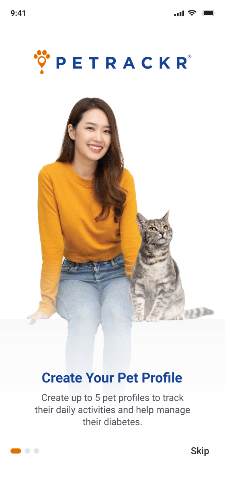
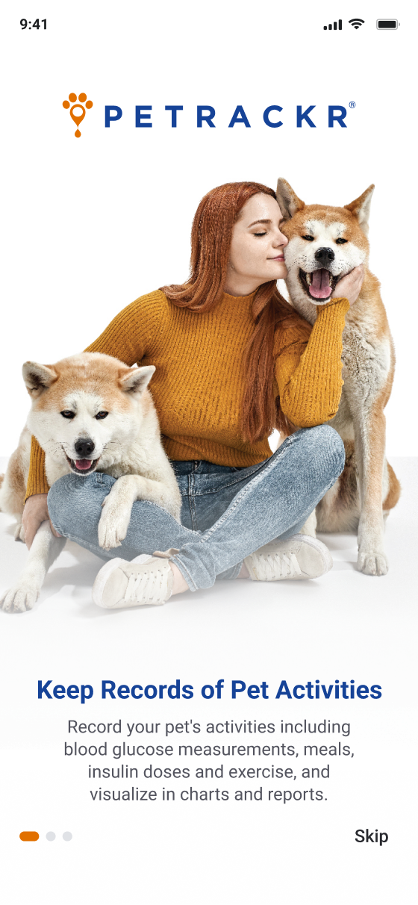
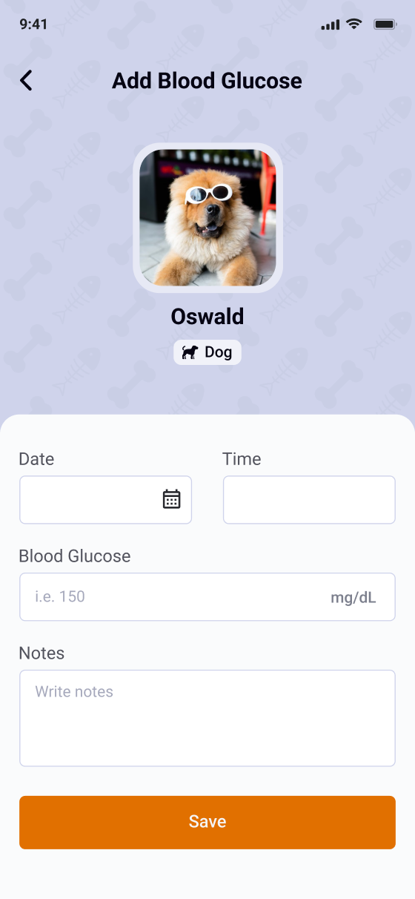
05 · Decision 2 of 6 · Logging
Making logging a quick confirmation, not a form
Owners log a reading while juggling a meter and a restless pet. A long form at that moment just gets in the way.
A full entry form · a quick-add shortcut · a shorter form with known information already filled in
Fill in the date and time automatically, so the glucose number is the only thing to enter.
Notes on food, stress, or activity are optional, so some readings get saved without that context.
Under 30 seconds, timed in usability sessions from tapping “Add reading” to saving. On paper, diary participants reported three to five minutes.
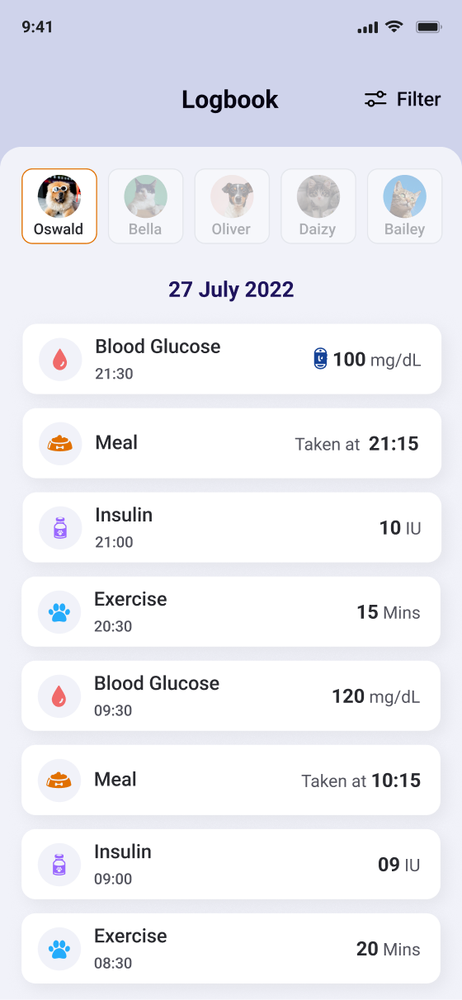
05 · Decision 3 of 6 · Sync
Making sync status impossible to miss
Ideally, the app would sync in the background. But phones limit background Bluetooth, and the analyzer’s firmware couldn’t support it reliably in the first release, so Universal Biosensors and the development team put automatic sync on hold. Since owners still had to sync themselves, I made sure they could always see when they last did.
Background sync (deferred) · sync when opening the app · visible status with a reconnect option
The app syncs when it’s open and the analyzer is nearby. Each analyzer shows when it last synced, with a way to reconnect.
Owners still have to open the app near the analyzer to keep their records up to date.
Owners can now see their sync status instead of guessing. We didn’t measure whether this reduced lost readings.
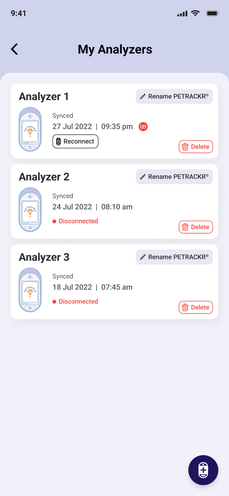
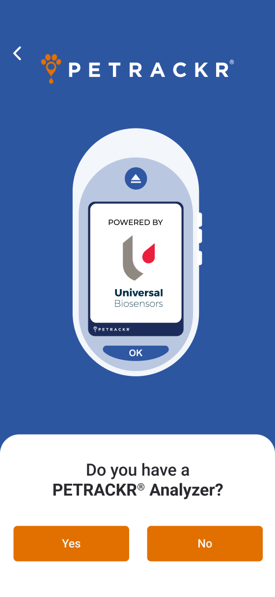
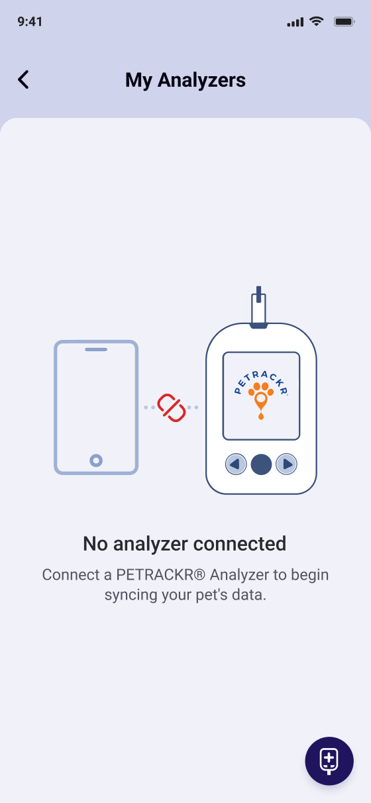
05 · Decision 4 of 6 · Charts
Showing each reading against the pet’s target range
Owners couldn’t tell whether a number like 140 was good or bad. Vets judge readings against each pet’s target range, so the chart should too.
A table · a line chart · a chart with target-range zones
Shade the chart by the pet’s own range, and mark meals and insulin on the same timeline. Daily and weekly views use the same zones.
The zones depend on the vet’s target range. Until an owner enters it, the chart shows the line without zones and prompts them to add it.
In testing, the median time to answer “Was this morning’s reading in range?” went from 22 seconds (number list, Round 1) to 7 seconds (zone chart, Round 2).
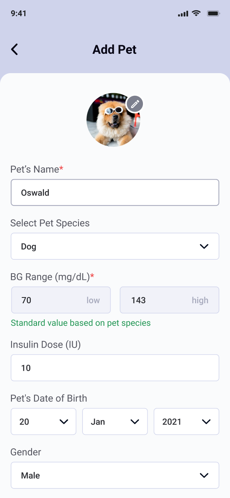
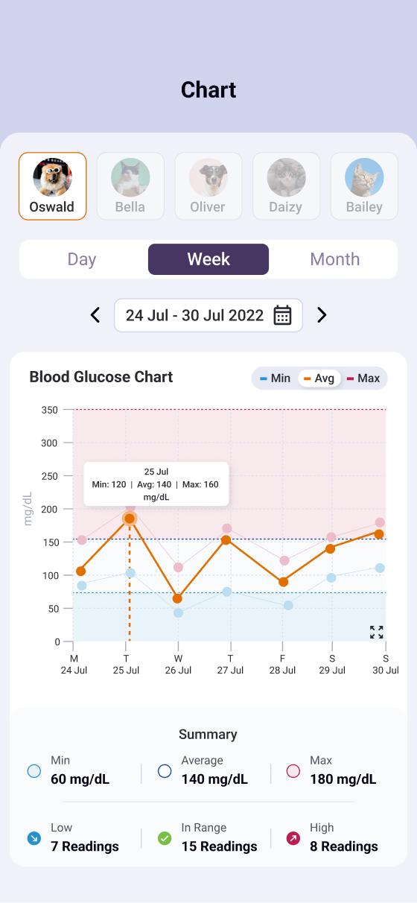
05 · Decision 5 of 6 · Reminders
Reminders that say which pet and what’s due
In the diary study, everyone stopped paying attention to generic phone alarms within a week. A reminder only helps if it says exactly what to do, and for which pet.
Blood glucose checks, meals, insulin, and exercise, for each pet
Each notification names the pet and the task, and owners can mark a task as done.
Reminders follow a schedule the owner sets. Adaptive reminders that learn each pet’s routine were put on hold.
Each pet gets its own schedule. We didn’t measure the effect on completed tasks separately.
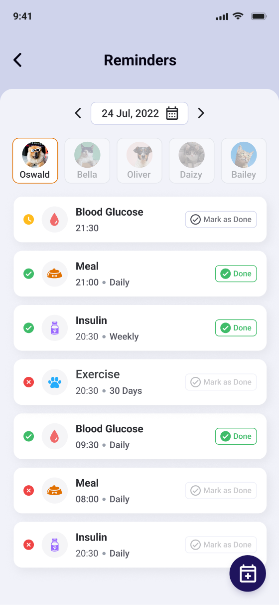
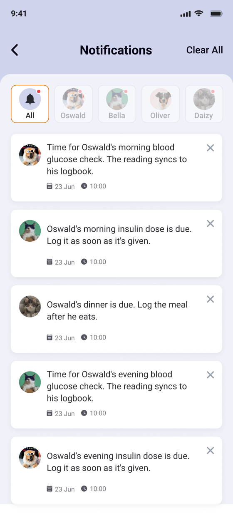
05 · Decision 6 of 6 · Vet report
Starting with a PDF the vet can actually use
Universal Biosensors had planned a portal for vets. But the vets I spoke to all worked from email and messaging, not shared apps. So I recommended starting with a PDF report that owners could send, and Universal Biosensors agreed to move the portal to phase 2.
Without a portal, vets don’t have ongoing access, though owners can send a report any time between visits.
Owners pick a period, and the report is built from the logbook. No photos, no retyping.
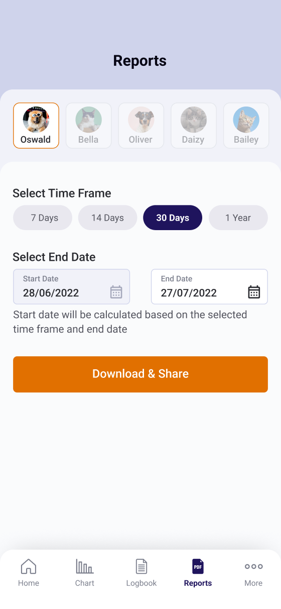
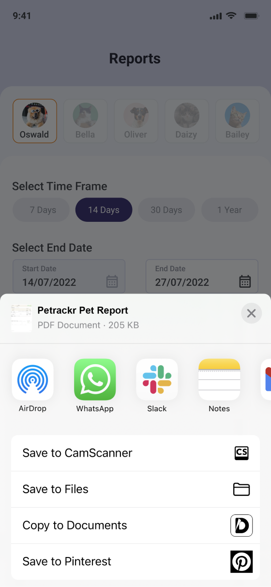
06 · Testing and iteration
What testing and client reviews changed
I ran three usability rounds with five people each: Round 1 on the original onboarding, Round 2 on the rebuilt onboarding and the zone chart, and Round 3 on logging and reports. Here’s what changed along the way, beyond the decisions above.
Logging and report screens
People mistapped the reading field one-handed, and had to set report dates manually.
Made the reading field bigger, and the report’s start date now fills in from the time frame.
Changed after Round 3, but not retested.
Client review rounds
Client feedback came back as a numbered list.
Put each updated screen right next to the comment it answered.
Every requested change could be checked in one pass.
The shipped version uses the owner’s own schedule. It doesn’t adapt to how each pet’s routine actually runs.
The design system ended up with three typefaces: Roboto, Montserrat, and Gilroy. I didn’t consolidate them before handoff, and it’s the first thing I’d clean up.
The app only syncs when it’s open near the analyzer. See Decision 3.
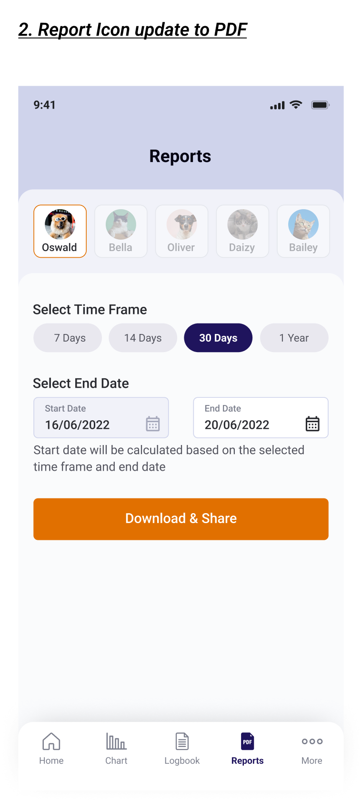
What you’re looking at
Universal Biosensors sent feedback as a numbered list. I placed each comment right above the screen it referred to, with the updated design underneath.
07 · Results and measurement limits
Three of four goals met in testing
At kickoff, we agreed on four goals. Testing showed three of them were met. The fourth, whether people keep using the app, needs real usage data we don’t have yet.
8 of 9 (89%) in Rounds 2 and 3, up from 3 of 5 (60%) in Round 1
Under 30 seconds (timed), down from 3–5 minutes on paper (self-reported)
Under 1 minute to generate and share a 14-day PDF (timed), down from 30+ minutes (self-reported)
Not measured yet. We never defined what to compare against, or what would count as success.
08 · Reflection
Four things I’d carry into my next project
Looking back, these are the lessons that changed how I work, not just how this app turned out.
The original flow made owners do a lot of setup before they could log a single reading.
I look for the first useful action early, and question which setup steps really need to come before it.
The diary study showed why short entry mattered: people were handling a pet and a device at the same time.
I pay attention to where and when something gets used, not only to the screen itself.
Reminders shipped without any way to see whether care tasks actually got done.
A well-reasoned design still needs proof. Next time, I’d check whether it improves task completion.
Retention was a kickoff goal that ended without a number.
I’d agree with engineering on what to track, what to compare against, and what success looks like, before launch.
Next case study
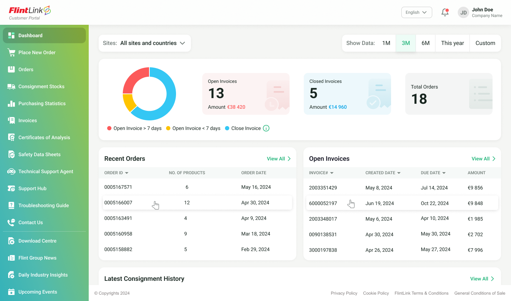
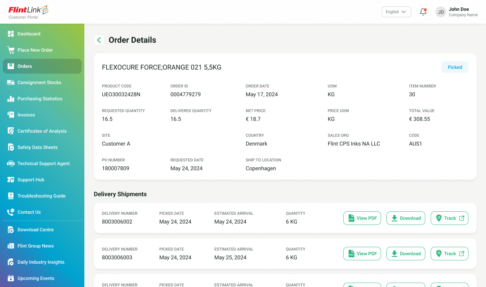
A customer portal that answers before anyone has to email
The brief asked for a document library, but in the first usability round people couldn’t find their most recent certificate in it. Working from 14 customer interviews and two site visits, I rebuilt the information architecture around the order and designed responsive workflows on top of it.
Customers can now access documents, check orders, and manage consignment stock without emailing an account manager.